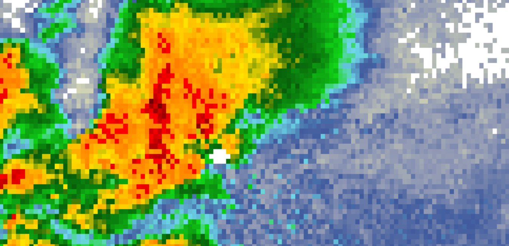

My Name is Jesse, I live in Maryland in a wonderful military family of 5. I am actually pretty young (lol) but I have managed to create this script alone. I have lived in California, Texas, Georgia, and Maryland. I am not in Maryland becuase my parents got stationed here in case if you guys are wondering. I love meterology and coding. I have been a weather enthusiast for 6 years (and counting). I watched this video almost everyday when I was six years old thinking it would be today's forecast.
On May 18, 2019 in the early morning hours, I would wake up to tornado sirens. At first, this frightened me, and I woke up everybody in the household thinking we we're all gonna die.
My dad goes out on the back porch trying to see the tornado, but I begged him to go back inside and get to our safe spot.
A user on YouTube archived KSAN's broadcast on the storm I witnessed and it can be found Here.
The tornado went right through the heart of the town but mainly causing minor damage.
The storm actually formed a hook echo on the KSAN radar site.
Later on in my life, I would actually beign to think that storms we're actually really cool to witness! But I have rarely ever witnessed a storm like that ever since.
But I was finally thrilled on July 29th 2023 when extreme heat fueled the storms forming that day. A PDS Severe Thunderstorm Warning was issued for my county. My first ever.
NWS LWX: THIS IS A DESTRUCTIVE STORM FOR WASHINGTON DC.
HAZARD..80 mph wind gusts
My nearest METAR reported an 84 mph wind gust, and I experienced it. One of the best storms of my life!
I would learn more about HTML, JavaScript, Python, and CSS more in my life.
To this day I am happily writing weather code.